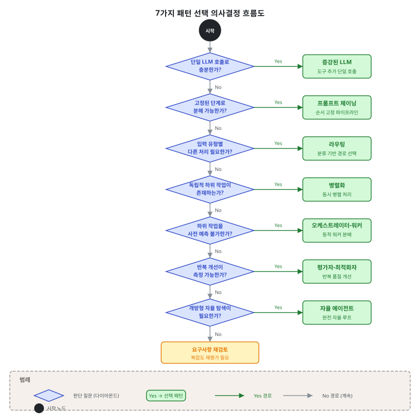

제2단원. 기본 패턴 — 에이전틱 시스템의 빌딩 블록¶
학습 목표¶
이 단원을 마치면 다음을 할 수 있다:
- 에이전틱 시스템의 6가지 기본 빌딩 블록과 자율 에이전트(완전한 시스템)를 설명할 수 있다
- 각 패턴의 적합/부적합 상황을 판별할 수 있다
- 패턴을 조합하여 복합 시스템을 설계할 수 있다
- Anthropic의 공식 가이드라인에 따라 적절한 복잡도를 선택할 수 있다
이 단원의 내용은 Anthropic의 "Building Effective Agents" (2024)를 기반으로 한다. Erik Schluntz와 Barry Zhang이 수십 개 팀과의 협업에서 도출한 패턴들이며, 가장 성공적인 구현이 복잡한 프레임워크가 아닌 단순하고 조합 가능한 패턴에 기반하였다는 발견이 핵심이다.
"지난 한 해 동안 우리는 업계 전반에서 LLM 에이전트를 구축하는 수십 개 팀과 협력하였다. 일관되게, 가장 성공적인 구현은 복잡한 프레임워크나 전문 라이브러리를 사용하지 않았다. 대신, 단순하고 조합 가능한 패턴으로 구축하고 있었다." — Anthropic, "Building Effective Agents" (2024)
2.1 증강된 LLM (Augmented LLM)¶
개념¶
에이전틱 시스템의 가장 기본적인 빌딩 블록은 증강된 LLM이다. 이는 검색(retrieval), 도구(tools), 메모리(memory) 등의 기능으로 강화된 LLM을 의미한다. 현재의 모델은 이러한 기능을 능동적으로 사용할 수 있다 — 자체적으로 검색 쿼리를 생성하고, 적절한 도구를 선택하며, 어떤 정보를 유지할지 결정한다.
┌─────────────────────────────────────────────┐
│ 증강된 LLM │
│ │
│ ┌─────────┐ ┌─────────┐ ┌─────────┐ │
│ │ 검색 │ │ 도구 │ │ 메모리 │ │
│ │Retrieval│ │ Tools │ │ Memory │ │
│ └────┬────┘ └────┬────┘ └────┬────┘ │
│ │ │ │ │
│ ▼ ▼ ▼ │
│ ┌─────────────────────────────────────┐ │
│ │ LLM │ │
│ │ (Claude, GPT, Gemini 등) │ │
│ └─────────────────────────────────────┘ │
└─────────────────────────────────────────────┘
구현 시 핵심¶
Anthropic은 두 가지에 집중할 것을 권고한다:
- 기능을 특정 사용 사례에 맞게 조정한다
- LLM에 쉽고 잘 문서화된 인터페이스를 제공한다
도구 인터페이스 설계는 인간-컴퓨터 인터페이스(HCI) 설계만큼 중요하다:
"에이전트-컴퓨터 인터페이스(ACI)에도 인간-컴퓨터 인터페이스(HCI)에 투입하는 만큼의 노력을 투자할 계획을 세워라." — Anthropic (2024)
2.2 프롬프트 체이닝 (Prompt Chaining)¶
개념¶
프롬프트 체이닝은 작업을 일련의 단계로 분해하여, 각 LLM 호출이 이전 호출의 출력을 처리하는 패턴이다. 중간 단계에 프로그래밍 방식의 검증(게이트)을 추가하여 프로세스가 올바른 경로에 있는지 확인할 수 있다.
┌──────────┐ ┌──────────┐ ┌──────────┐
│ LLM │────▶│ 게이트 │────▶│ LLM │
│ 호출 1 │ │ (검증) │ │ 호출 2 │
│ │ │ │ │ │
│ 초안 │ │ 기준 │ │ 최종 │
│ 생성 │ │ 충족? │ │ 완성 │
└──────────┘ └──────────┘ └──────────┘
적합한 상황¶
- 작업을 고정된 하위 작업으로 쉽고 깔끔하게 분해할 수 있는 경우
- 지연 시간을 희생하더라도 더 높은 정확도를 원하는 경우
실전 예시¶
# 예시: 마케팅 카피 생성 → 번역 체인
def marketing_chain(product_description, target_language):
# 단계 1: 영어 마케팅 카피 생성
english_copy = llm.call(
f"Write compelling marketing copy for: {product_description}"
)
# 게이트: 카피가 300자 이하인지 확인
if len(english_copy) > 300:
english_copy = llm.call(
f"Shorten this to under 300 characters: {english_copy}"
)
# 단계 2: 대상 언어로 번역
translated = llm.call(
f"Translate to {target_language}, preserving marketing tone: {english_copy}"
)
return translated
실전 도구의 적용¶
- Superpowers: brainstorming → writing-plans → executing-plans 체인이 대표적인 프롬프트 체이닝이다
- GSD: discuss → plan → execute → verify의 6단계 파이프라인
- OMC: Team 모드의 5단계 파이프라인(plan → prd → exec → verify → fix)
2.3 라우팅 (Routing)¶
개념¶
라우팅은 입력을 분류하여 전문화된 후속 작업으로 연결하는 패턴이다. 관심사를 분리하고, 각 경로에 최적화된 프롬프트를 사용할 수 있게 한다.
┌──────────────┐
┌────▶│ 일반 질문 │──▶ 간단한 응답 프롬프트
│ └──────────────┘
┌──────────┐ │ ┌──────────────┐
│ 분류기 │──┼────▶│ 환불 요청 │──▶ 환불 처리 워크플로우
│ │ │ └──────────────┘
└──────────┘ │ ┌──────────────┐
└────▶│ 기술 지원 │──▶ 진단 + 해결 프롬프트
└──────────────┘
적합한 상황¶
- 별도로 처리하는 것이 더 나은 뚜렷한 카테고리가 있는 복잡한 작업
- 분류가 LLM 또는 전통적 분류 모델로 정확하게 수행될 수 있는 경우
모델 라우팅의 특수 사례¶
라우팅의 중요한 응용 중 하나는 모델 라우팅이다. 쉽고 흔한 질문은 비용 효율적인 소형 모델(Haiku)로, 어렵고 드문 질문은 고성능 모델(Opus)로 라우팅한다. 이에 대한 상세한 논의는 5단원 모델 라우팅 패턴에서 다룬다.
실전 도구의 적용¶
- OMC: 3티어 모델 라우팅(Opus/Sonnet/Haiku)이 핵심 기능이다. 작업 복잡도에 따라 자동으로 모델을 선택한다
- gstack: 브라우저 자동화 시 네비게이션은 Haiku, 분석은 Sonnet, 복잡한 판단은 Opus로 자동 라우팅한다
2.4 병렬화 (Parallelization)¶
개념¶
LLM이 동시에 작업을 수행하고, 출력을 프로그래밍 방식으로 집계하는 패턴이다. 두 가지 변형이 있다:
- 섹셔닝(Sectioning): 작업을 독립적 하위 작업으로 분할하여 병렬 실행
- 투표(Voting): 동일 작업을 여러 번 실행하여 다양한 출력을 획득
섹셔닝: 투표:
┌──────────┐ ┌──────────┐
│ 하위작업1 │──┐ │ 시도 1 │──┐
└──────────┘ │ └──────────┘ │
┌──────────┐ │ 집계 ┌──────────┐ │ 다수결
│ 하위작업2 │──┼──────▶ 결과 │ 시도 2 │──┼──────▶ 결과
└──────────┘ │ └──────────┘ │
┌──────────┐ │ ┌──────────┐ │
│ 하위작업3 │──┘ │ 시도 3 │──┘
└──────────┘ └──────────┘
적합한 상황¶
- 분할된 하위 작업을 속도를 위해 병렬화할 수 있는 경우
- 더 높은 신뢰도를 위해 여러 관점이나 시도가 필요한 경우
실전 예시¶
섹셔닝 예시: 가드레일 분리
동일한 LLM이 가드레일과 핵심 응답을 모두 처리하는 것보다, 분리하는 것이 더 나은 성능을 보인다.
투표 예시: 코드 보안 검토
코드 ──┬──▶ [프롬프트 A] 보안 취약점 검사 ──┐
├──▶ [프롬프트 B] 인젝션 공격 검사 ──┤──▶ 하나라도 문제 발견 시 플래그
└──▶ [프롬프트 C] 권한 상승 검사 ──┘
Python asyncio 기반 병렬화 예시¶
섹셔닝(Sectioning) — 가드레일 분리 구현
import asyncio
from anthropic import Anthropic
client = Anthropic()
async def run_llm(system_prompt: str, user_message: str) -> str:
"""단일 LLM 호출 (비동기)"""
# 실제 환경에서는 async 클라이언트 사용
response = client.messages.create(
model="claude-haiku-4-20250514",
max_tokens=1024,
system=system_prompt,
messages=[{"role": "user", "content": user_message}]
)
return response.content[0].text
async def parallel_sectioning(query: str) -> dict:
"""섹셔닝 패턴: 핵심 응답과 가드레일을 병렬 처리"""
core_task = run_llm(
"사용자의 질문에 정확하고 유용하게 답변한다.",
query
)
guard_task = run_llm(
"다음 텍스트가 유해하거나 부적절한 내용을 포함하는지만 판단한다. "
"포함하면 'BLOCK', 아니면 'PASS'로만 답한다.",
query
)
# 두 작업을 동시에 실행
core_response, guard_result = await asyncio.gather(core_task, guard_task)
if "BLOCK" in guard_result:
return {"status": "blocked", "response": "요청을 처리할 수 없다."}
return {"status": "ok", "response": core_response}
# 투표(Voting) 패턴 — 보안 검토에 다수결 적용
async def voting_security_review(code: str) -> dict:
"""투표 패턴: 3가지 관점으로 보안 취약점을 동시 검토"""
perspectives = [
("SQL 인젝션과 XSS 취약점에 집중하여 검토한다.", "인젝션 공격"),
("인증 우회와 권한 상승 취약점을 검토한다.", "인증/권한"),
("민감 데이터 노출과 암호화 문제를 검토한다.", "데이터 보안"),
]
tasks = [
run_llm(
f"{prompt} 문제 발견 시 'ISSUE: [설명]', 없으면 'CLEAN'으로만 답한다.",
f"코드를 검토하라:\n{code}"
)
for prompt, _ in perspectives
]
results = await asyncio.gather(*tasks)
issues = [
f"[{perspectives[i][1]}] {r.replace('ISSUE:', '').strip()}"
for i, r in enumerate(results)
if r.startswith("ISSUE")
]
return {
"has_issues": len(issues) > 0,
"issues": issues,
"verdict": "보안 이슈 발견" if issues else "검토 통과"
}
실전 도구의 적용¶
- OMC Ultrapilot: 최대 5개 워커가 독립된 git worktree에서 병렬 실행
- GSD: 웨이브(wave) 패턴으로 독립 태스크를 병렬 실행
- Gas Town: 12~30개 Polecat이 각각 독립된 태스크를 병렬 수행
2.5 오케스트레이터-워커 (Orchestrator-Workers)¶
개념¶
중앙 LLM이 동적으로 작업을 분해하고, 워커 LLM에 위임하며, 결과를 합성하는 패턴이다. 병렬화와 위상적으로 유사하지만, 핵심 차이는 하위 작업이 사전에 정의되지 않고 오케스트레이터가 입력에 따라 결정한다는 점이다.
┌──────────────────────────────────────────────┐
│ 오케스트레이터 (Opus) │
│ │
│ 입력 분석 → 하위 작업 도출 → 워커 할당 │
│ │
│ ┌────────┐ ┌────────┐ ┌────────┐ │
│ │워커 A │ │워커 B │ │워커 C │ │
│ │(Sonnet) │ │(Sonnet) │ │(Sonnet) │ │
│ └───┬────┘ └───┬────┘ └───┬────┘ │
│ │ │ │ │
│ └───────────┼───────────┘ │
│ │ │
│ 결과 합성 및 반환 │
└──────────────────────────────────────────────┘
적합한 상황¶
- 필요한 하위 작업을 사전에 예측할 수 없는 복잡한 작업
- 코딩에서 변경할 파일 수와 각 파일의 변경 성격이 작업에 따라 달라지는 경우
핵심 참조: Anthropic의 공식 패턴¶
이 패턴은 Anthropic의 Research 기능에서 공식적으로 사용하는 아키텍처이다:
"우리의 Research 시스템은 lead agent가 프로세스를 조율하면서 병렬로 작동하는 전문화된 subagent에게 위임하는 orchestrator-worker 패턴의 멀티에이전트 아키텍처를 사용한다." — Anthropic (2025)
이 패턴을 Claude Code에 적용한 것이 Opus lead agent + Sonnet subagent 공식 패턴이다:
Main Session (Opus, lead agent)
├─▶ Teammate A (Sonnet, subagent): 탐색
├─▶ Teammate B (Sonnet, subagent): 구현
└─▶ Teammate C (Sonnet, subagent): 검증
- 단일 Opus 대비 90.2% 성능 향상
- 적정 규모: 3~5 에이전트 (그 이상은 합성 복잡도가 이점을 상쇄)
Claude Code Agent Teams API 활용 예시¶
Claude Code의 공식 Agent Teams API를 사용하면 오케스트레이터-워커 패턴을 직접 구현할 수 있다:
# Claude Code Agent Teams를 사용한 오케스트레이터-워커 패턴
# 이 코드는 Claude Code 세션 내에서 실행된다 (CLAUDE.md 기반 에이전트 정의 필요)
import subprocess
import json
def orchestrate_refactoring(feature_description: str) -> dict:
"""
오케스트레이터: 기능 설명을 받아 하위 작업으로 분해하고 워커에 위임한다.
실제 Claude Code 환경에서는 Task 도구로 subagent를 호출한다.
"""
# 1단계: 오케스트레이터가 작업 분해
# (Claude Code에서 Opus 모델이 이 역할 담당)
subtasks = [
{"id": "T1", "agent": "architect", "task": f"설계 분석: {feature_description}"},
{"id": "T2", "agent": "implementer", "task": f"구현: {feature_description}"},
{"id": "T3", "agent": "tester", "task": f"테스트 작성: {feature_description}"},
]
# 2단계: 워커 에이전트 병렬 실행
# Claude Code에서는 SendMessage 도구로 각 에이전트에 위임
results = {}
for task in subtasks:
# SendMessage(agent=task["agent"], message=task["task"])에 해당
results[task["id"]] = f"[{task['agent']}] {task['task']} 완료"
# 3단계: 결과 합성
return {
"status": "완료",
"subtasks": len(subtasks),
"results": results
}
주의: 실제 Claude Code 환경에서는 Task 도구를 사용하여 .claude/agents/ 폴더에 정의된 에이전트에 작업을 위임한다. 상세 구현 방법은 9단원에서 다룬다.
실전 도구의 적용¶
- OMC Team 모드: 5단계 파이프라인(plan → prd → exec → verify → fix)
- ECC chief-of-staff: 최상위 오케스트레이터로서 복잡한 작업의 에이전트 배분 담당
- Superpowers subagent-driven-development: 작업별 신선한 subagent 파견 (orchestrator는 메인 세션)
2.6 평가자-최적화자 (Evaluator-Optimizer)¶
개념¶
한 LLM 호출이 응답을 생성하고, 다른 LLM 호출이 평가와 피드백을 제공하는 루프 구조이다.
┌──────────┐ ┌──────────┐ ┌──────────┐
│ 생성자 │────▶│ 평가자 │────▶│ 판정 │
│(Sonnet) │ │(Opus) │ │ │
│ │ │ │ │ Pass? │
│ 초안 │ │ 품질 │ │ │
│ 생성 │ │ 평가 │ │ Yes→반환 │
└──────────┘ └──────────┘ │ No→재시도│
▲ └─────┬───┘
│ │
└──── 피드백과 함께 재생성 ◄────────┘
적합한 상황¶
- 명확한 평가 기준이 있는 경우
- 반복적 개선이 측정 가능한 가치를 제공하는 경우
핵심 발견: 반복 횟수의 수확 체감¶
품질 개선률:
1차 반복 ████████████████████████████████████████ 60%
2차 반복 █████████████████████████ 25%
3차 반복 █████ 5%
4차 이후 ██ 2%
→ 품질 개선의 85%가 첫 2회 반복에서 달성된다
→ 3회째는 2회째 비용의 2배를 쓰면서 한계 개선만 제공한다
실전 도구의 적용¶
- OMC Ralph 모드: Planner → Executor → Verifier를 무한 반복하며, 검증 통과까지 계속한다
- ECC eval-harness: 평가 프레임워크를 실행하여 품질 메트릭을 수집한다
- Superpowers TDD 스킬: RED-GREEN-REFACTOR 사이클을 강제하는 것이 평가자-최적화자 패턴의 코딩 특화 버전이다
2.7 자율 에이전트 (Autonomous Agents)¶
개념¶
에이전트는 작업 명세를 받은 후 독립적으로 계획하고 실행한다. 각 단계에서 환경으로부터 실측 데이터(ground truth)를 획득하여 진행 상황을 평가한다. 인간의 판단이 필요한 체크포인트에서 일시 정지하거나, 블로커를 만나면 인간에게 돌아갈 수 있다.
┌─────────────────────────────────────────┐
│ 자율 에이전트 루프 │
│ │
│ ┌──────────┐ │
│ │ 작업 │ │
│ │ 명세 │ │
│ └────┬─────┘ │
│ │ │
│ ▼ │
│ ┌──────────┐ ┌──────────┐ │
│ │ 행동 │────▶│ 환경 │ │
│ │ 결정 │ │ 관찰 │ │
│ └──────────┘ └────┬─────┘ │
│ ▲ │ │
│ │ │ │
│ └────────────────┘ │
│ (결과 기반 다음 행동 결정) │
│ │
│ 종료 조건: 작업 완료 또는 최대 반복 도달 │
└─────────────────────────────────────────┘
적합한 상황¶
- 필요한 단계 수를 예측하기 어렵거나 불가능한 개방형 문제
- 고정된 경로를 하드코딩할 수 없는 경우
주의사항¶
"에이전트의 자율적 특성은 더 높은 비용과 오류 복합 가능성을 의미한다. 샌드박스 환경에서의 광범위한 테스트와 적절한 가드레일을 권고한다." — Anthropic (2024)
자율 에이전트의 안전장치 구현 예시¶
프로덕션 자율 에이전트에는 반드시 무한 루프 방지와 비용 제한 안전장치가 필요하다:
import time
from dataclasses import dataclass, field
from typing import Optional
@dataclass
class AgentSafeguards:
"""자율 에이전트의 안전장치 설정"""
max_iterations: int = 50 # 최대 반복 횟수
max_cost_usd: float = 50.0 # 최대 비용 (USD)
max_time_seconds: int = 3600 # 최대 실행 시간 (초)
human_review_threshold: float = 0.3 # 실패율 임계값: 30% 초과 시 중단
# 실행 중 추적 상태
iterations: int = 0
estimated_cost_usd: float = 0.0
start_time: float = field(default_factory=time.time)
failed_steps: int = 0
total_steps: int = 0
class SafeAutonomousAgent:
"""안전장치가 포함된 자율 에이전트"""
def __init__(self, safeguards: AgentSafeguards):
self.sg = safeguards
def check_safeguards(self) -> Optional[str]:
"""안전장치 점검. 중단 이유를 반환하거나 None(계속)을 반환한다."""
if self.sg.iterations >= self.sg.max_iterations:
return f"최대 반복 횟수 초과 ({self.sg.max_iterations}회)"
if self.sg.estimated_cost_usd >= self.sg.max_cost_usd:
return f"비용 한도 초과 (${self.sg.estimated_cost_usd:.2f} >= ${self.sg.max_cost_usd})"
elapsed = time.time() - self.sg.start_time
if elapsed >= self.sg.max_time_seconds:
return f"시간 한도 초과 ({elapsed:.0f}초)"
if self.sg.total_steps > 0:
failure_rate = self.sg.failed_steps / self.sg.total_steps
if failure_rate > self.sg.human_review_threshold:
return f"실패율 임계값 초과 ({failure_rate*100:.1f}%) — 인간 검토 필요"
return None # 계속 진행
def run(self, task: dict) -> dict:
"""안전장치 내에서 자율 실행"""
while not task.get("complete", False):
stop_reason = self.check_safeguards()
if stop_reason:
return {
"status": "stopped",
"reason": stop_reason,
"iterations": self.sg.iterations,
"cost_usd": self.sg.estimated_cost_usd,
"partial_result": task.get("partial_result")
}
# 실제 에이전트 스텝 실행 (여기서 LLM 호출)
self.sg.iterations += 1
self.sg.estimated_cost_usd += 0.05 # 예시: 스텝당 $0.05
# 작업 진행 (실제 구현에서는 LLM 호출로 대체)
task["complete"] = self.sg.iterations >= 3 # 예시 종료 조건
return {"status": "complete", "iterations": self.sg.iterations}
실전 도구의 적용¶
- OMC Ralph 모드: Planner → Executor → Verifier 루프를 검증 통과까지 자율 반복. rate limit에도 자동 재개
- GSD auto 모드: 마일스톤 단위의 완전 자율 실행. DLP 7가지 안전장치로 무한 루프 방지
- Gas Town Mayor + Polecat: Mayor orchestrator가 Polecat subagent들을 동적 배정하는 자율 시스템
자율 에이전트는 완전한 시스템 유형으로서, 위의 6가지 기본 빌딩 블록(2.1~2.6)을 내부적으로 조합하여 구현한다. 예를 들어 OMC Ralph는 계획-실행 단계에서 오케스트레이터-워커(2.5)를, 검증 단계에서 평가자-최적화자(2.6)를 사용한다.
2.8 패턴 선택 가이드¶
결정 트리¶
작업 분석 시작
│
├─ 단일 LLM 호출로 충분한가?
│ └─ Yes → 증강된 LLM (2.1)
│
├─ 고정된 단계로 분해 가능한가?
│ └─ Yes → 프롬프트 체이닝 (2.2)
│
├─ 입력 유형에 따라 다른 처리가 필요한가?
│ └─ Yes → 라우팅 (2.3)
│
├─ 독립적 하위 작업이 있는가?
│ └─ Yes → 병렬화 (2.4)
│
├─ 하위 작업을 사전에 예측할 수 없는가?
│ └─ Yes → 오케스트레이터-워커 (2.5)
│
├─ 반복적 개선이 측정 가능한 가치가 있는가?
│ └─ Yes → 평가자-최적화자 (2.6)
│
└─ 개방형 문제로 자율적 탐색이 필요한가?
└─ Yes → 자율 에이전트 (2.7)

패턴 비교 매트릭스¶
| 패턴 | 예측 가능성 | 유연성 | 비용 | 지연 시간 | 복잡도 |
|---|---|---|---|---|---|
| 증강된 LLM | 높음 | 낮음 | 최저 | 최저 | 최저 |
| 프롬프트 체이닝 | 높음 | 낮음 | 낮음 | 중간 | 낮음 |
| 라우팅 | 중간 | 중간 | 중간 | 낮음 | 낮음 |
| 병렬화 | 중간 | 중간 | 중간 | 낮음 | 중간 |
| 오케스트레이터-워커 | 낮음 | 높음 | 높음 | 높음 | 높음 |
| 평가자-최적화자 | 중간 | 중간 | 높음 | 높음 | 중간 |
| 자율 에이전트 | 최저 | 최고 | 최고 | 최고 | 최고 |
핵심 정리: Anthropic의 세 가지 원칙
에이전트 구현 시 따라야 할 세 가지 핵심 원칙: 1. 에이전트 설계에서 단순성을 유지한다 2. 에이전트의 계획 단계를 명시적으로 보여주어 투명성을 우선한다 3. 철저한 도구 문서화와 테스트를 통해 에이전트-컴퓨터 인터페이스(ACI)를 신중히 설계한다
복습 질문¶
-
Anthropic이 정의한 6가지 기본 워크플로우 패턴을 나열하고, 각각을 한 문장으로 설명하라.
-
프롬프트 체이닝과 오케스트레이터-워커의 핵심 차이점은 무엇인가? 각각 적합한 상황의 예를 들어 설명하라.
-
병렬화의 두 가지 변형(섹셔닝과 투표)을 비교하고, 각각의 실전 사용 사례를 제시하라.
-
평가자-최적화자 패턴에서 "품질 개선의 85%가 첫 2회 반복에서 달성된다"는 발견이 시스템 설계에 주는 시사점은 무엇인가?
-
"가장 간단한 솔루션을 찾고, 필요할 때만 복잡성을 증가시키라"는 Anthropic의 조언을 따를 때, 새 프로젝트에서 패턴 선택의 올바른 접근법은 무엇인가?
이전 단원: 제1단원. 서론 | 다음 단원: 제3단원. 오케스트레이션 패턴